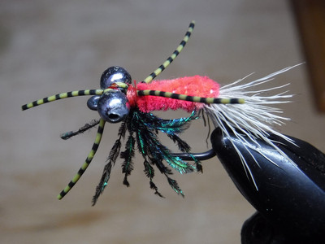
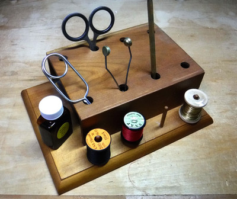
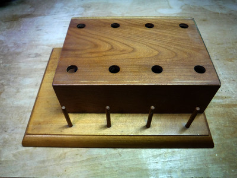
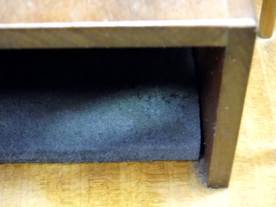
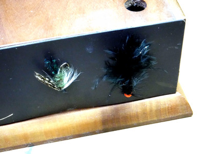

私のお気に入り
自作の道具たち タイイングツール・ベンチ（ツールスタンド）
2019年のシーズンオフ、やることが無いので近所の川でニゴイやコイを相手に勝負することにした。最初は甘く考えていたのだが、彼らの学習能力・記憶能力はかなりのモノがあると思い知らされた。ルアーではニゴイをそれなりに釣れるようになったが、巨鯉を目撃してからはその姿が眼から離れず、2010年のニュージーランド釣行の準備でシケーダ・パターンを巻いて以来、何と９年ぶりにバイスとマテリアルを取り出し、ネットで調べたカープ・パターンを見よう見まねで巻いてみた次第。

タイイングも下手で、載せるのが恥ずかしいです.....
Egan's Headstand
Egan's Headstand
その際、ふと、物置に昔作ったタイイングツール・ベンチがしまってあったことを思いだした。探し出して綺麗に埃を拭き取り、昔は真剣にフライを巻いていたのだなぁ....と感慨にふけった。

自作のタイイングツール・ベンチ
と、思うに、昔も今も既製品を買うだけのお金が無いことを改めて実感しました。(笑)
などと書いてから、ネットで調べると、国内外のフライフィッシングの有名ブランド品は、僕からすると天文学的な値段（笑）がついており、これではとても買えないなぁと驚きました。ゴム？ ウレタン？など発泡素材のシンプルな製品でも3,000円以上しますからねぇ....。さらに発泡素材でできた製品の中には、強い臭いを放つ物があるそうなのでご注意を！
もっとも、あれこれ材料を買い求めたり、工具を持っていない方にとっては、自作するとかえって高く付いてしまう結果になるかもしれません。
材料と作成方法
- 模型用：木製展示台
作例の大きさは、幅20cm、奥行き15cm、厚さ1.5cmほどです。1990年代前半に、東急ハンズで買ったような覚えがありますが、今ではネット通販ですぐ探せると思います。
チェックしてみたら、既製品の木製ディスプレイベースはかなり高額なので、体裁さえ気にしなければ、ホームセンターか百円ショップにて、適当な板を買えば充分でしょう。あるいは、百円ショップで売っている額縁・フォトフレームの中から適当なサイズを探し、ガラスを外してそこに安価な板をはめ込めば、綺麗な縁取りの台座が作れるかもしれません。木製トレイも百均で各種サイズ、色のものを売っていますので、逆さまにして着色すれば十分利用できます。
あまり大きいのを作っても卓上でかさばりますし、小さいと役目を果たさないので、ご自分のタイイングスタイルを考えた上でデザインして下さい。 - ヒノキなどの板
厚さは4～5mm程度。木目の美しさを求める方は、色々な銘木を探しても楽しいでしょう。
幅15cm、奥行き11cm、高さ4.5cmほどの、コの字型のスタンド部分を作ります。天板には適当な位置、数で、直径10mmほどの穴を開けます。百円ショップでは、穴あきの5mm厚の板を売っています。 - ウレタンシート
厚さは3mm程度。幅15cm弱、奥行き11cm弱にカットして、コの字型のスタンド部分の下側に敷き、ニードルを穴に立てた時のクッションとしています。段ボールを使い、ブスブスに穴が空いてしまったら交換する、という手もあるかと思います。 - ヒノキ丸棒
直径3mm、長さ40～45mm程度。作例では、スレッドのボビンが４本保持できるように、木製展示台にドリルで穴を開けて、丸棒を差し込んで接着しています。 - 仕上げ塗装
すべての木製部品が所定の形に組み上げられたなら、木工用塗料のクリア、もしくはニスなどを塗ります。見栄えが良くなり、耐久性も向上します。塗装後にマグネットシートを接着します。 - マグネットシート（カット加工が可能なタイプ）
幅15cm、高さ4.5cmほどにカットして、スタンド部の側面に接着します。完成したフライをそこに添えると磁力で保持され、乾燥を待つことができます。作例では片側のみですが、ウレタンシートを敷いた後に、反対側にも接着すると良いでしょう。

基本構造

スタンド部分下に敷いたウレタンシート

マグネットシートにフライをくっつけて乾燥を待つ
2019/12/14
私のお気に入り 目次へ
サイトマップ
ホームへ
お問い合わせ